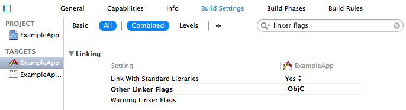

The Connect IQ Mobile SDK allows companion iOS applications to be created that interact with Monkey C applications running on Garmin wearable devices. This allows feature-rich user experiences to be built by retrieving remote data or offloading resource-intensive tasks from the wearable device to the iOS device. This document will guide you through adding the Mobile SDK to an iOS project, as well as introducing the SDK’s API and how to communicate with your Monkey C apps.
The Mobile SDK for iOS is distributed as an iOS framework package and can be found in the root directory of the Connect IQ SDK. To enable the framework,
add an entry to the Target > General > Linked Frameworks and Libraries panel. To do this, click the + at the bottom of the Linked Frameworks and Libraries list, click Add Other..., browse for ConnectIQ.framework, and click OK.
You will be presented with a dialog box to choose which targets to add the Framework to. Ensure that the appropriate targets are checked and then click Finish.
To allow a project to build with the Mobile SDK, embed the framework as a binary for each of the project’s targets by adding an entry to the Target > General > Embedded Binaries panel.
The Mobile SDK for iOS utilizes category methods internally. When importing a library that uses category methods, an additional flag must be specified to allow the library to be linked correctly. To do this, add the –ObjC flag to the Target > Build Settings > Other Linker Flags setting.

Unlike the Mobile SDK for Android, apps created with the Mobile SDK for iOS are standalone apps and do not directly rely on Garmin Connect Mobile (GCM) to communicate with a wearable device. They do, however, require GCM to initially discover Connect IQ-compatible devices that are available for communication, or to install Monkey C applications on the wearable device. The companion app and GCM exchange information by launching each other via the iOS URL scheme system. To facilitate this, a URL scheme that GCM can send data to must be registered by the app. To do this, add an entry to the Target > Info > URL Types panel. A string that is not likely to collide with any other apps on the iOS device should be chosen. See the Apple documentation for more information on custom URL schemes.
If you are compiling against the iOS 9 SDK or above you will need to add an entry for gcm-ciq to LSApplicationQueriesSchemes in your app’s Info.plist. This is needed to ensure that the SDK can verify if GCM is installed. If this key is not present in your Info.plist it will need to be added.
If your project doesn’t already set CFBundleDisplayName in your app’s Info.plist, you will need to add a definition. You can set this to ${PRODUCT_NAME} if you are unsure what value to use.
Starting in iOS 10 it is required to set strings explaining the usage of BLE peripheral access. The NSBluetoothPeripheralUsageDescription key must be set in Info.plist to explain your app’s usage of BLE to be accepted by iTunes Connect. If this key is not present in your Info.plist it will need to be added.
The iOS system allows apps that communicate with Bluetooth devices to be woken up to execute in the background when a connected device has data to send. This can be useful for companion apps that process requests for their respective Monkey C applications on a wearable device. To enable this behavior, turn on the Uses Bluetooth LE accessories option in the Target > Capabilities > Background Modes panel.
All interaction with the Mobile SDK is done through the ConnectIQ class. This class must be initialized during app startup with the project’s URL scheme and a UI override delegate. Typically this is done within the app delegate’s application:didFinishLaunchingWithOptions: method.
[[ConnectIQ sharedInstance] initializeWithUrlScheme:@"exapp-123456"
uiOverrideDelegate:self];
The URL scheme should be the same string chosen in Step 4 of Configuring a project to use the Mobile SDK.
When invoking a method of the ConnectIQ class that requires GCM to be installed and it is not present on the iOS system, by default an alert dialog will be shown to the user that allows them to go to the Apple App Store page for GCM to install it. By passing an instance of an object that conforms to the IQUIOverrideDelegate protocol here, custom behavior or a specialized UI may be specified in this case. To use the default alert dialog and behavior, pass nil.
If a UI override delegate was specified and an action was performed that requires GCM to be installed, the ConnectIQ class will call the needsToInstallConnectMobile method on that delegate. The app should inform the user that GCM is required for this action and give the user the option to open the Apple App Store page for GCM or to cancel the action that triggered it. If the user chooses to install GCM, the showAppStoreForConnectMobile method may be called.
- (void)needsToInstallConnectMobile {
// Show alert to user with choice to install GCM
if (alert.result == YES) {
[[ConnectIQ sharedInstance] showAppStoreForConnectMobile];
}
}
Note that this example is synchronous, but if UI is shown to the user, the showAppStoreForConnectMobile method should be called as a result of user input instead of directly in the needsToInstallConnectMobile method.
The Mobile SDK for iOS can communicate directly with Connect IQ-compatible devices over Bluetooth. However, it must first know which devices are available. To accomplish this, a companion app must call the showConnectIQDeviceSelection method.
[[ConnectIQ sharedInstance] showConnectIQDeviceSelection];
This method launches GCM to the foreground and allows the user to choose which paired Connect IQ-compatible devices to share with the companion app. If GCM is not installed and a UI override delegate was set, its needsToInstallConnectMobile will be called.
Once the user has selected which of the paired devices to share with the companion app, GCM will launch the companion app (via its registered URL scheme), passing the list of devices as serialized URL query items. The companion app should override its app delegate’s application:openURL:sourceApplication:annotation: method to listen for this. The companion app may then call the parseDeviceSelectionResponseFromURL: method to extract the query items into an NSArray of IQDevice objects that it can use with the Mobile SDK.
- (BOOL)application:(UIApplication *)application
openURL:(NSURL *)url
sourceApplication:(NSString *)sourceApplication
annotation:(id)annotation {
if ([url.scheme isEqualToString:ReturnURLScheme] &&
[sourceApplication isEqualToString:IQGCMBundle]) {
NSArray *devices = [[ConnectIQ sharedInstance]
parseDeviceSelectionResponseFromURL:url];
if (devices != nil) {
[self.devices removeAllObjects];
for (IQDevice *device in devices) {
self.devices[device.uuid] = device;
}
return YES;
}
}
return NO;
}
Note that in this example, the parsed devices are stored to a dictionary for later use within the app, but are not cached in any kind of persistent storage.
Once the companion app has one or more IQDevice instances from GCM, it may register with the ConnectIQ class to receive notifications when that device’s connection status changes by calling registerForDeviceEvents:delegate:.
[[ConnectIQ sharedInstance] registerForDeviceEvents:device
delegate:self];
The delegate passed in must be an instance of a class that conforms to the IQDeviceEventDelegate protocol. Once registered, the delegate’s deviceStatusChanged:status: method will be invoked when the device’s connection status changes. The getDeviceStatus: method may also be called to get the current connection status of the device. These methods both return a device’s status as an IQDeviceStatus value.
getDeviceStatus: or sendMessage:toApp:progress:completion:.
unregisterForDeviceEvents:delegate: or unregisterForAllDeviceEvents: method.
// Stop listening to a single device
[[ConnectIQ sharedInstance] unregisterForDeviceEvents:device
delegate:self];
// ... or unregister all devices for this listener
[[ConnectIQ sharedInstance] unregisterForAllDeviceEvents:self];
Apps are represented in the Mobile SDK as instances of the IQApp class. An instance of the IQApp class represents a single app on a single device. This means that in order to work with an app that’s installed on two different devices, a companion app will need two instances of the IQApp class with the same app ID, one for each device. To create an app instance, use the IQApp class’s appWithUUID:device: method.
NSUUID *uuid = [[NSUUID alloc] initWithUUIDString:@”<YourAppID>”];
IQApp *app = [IQApp appWithUUID:uuid device:device];
Once an IQApp instance has been created that links an app ID to an IQDevice instance, a companion app may request the status of the app on that device by calling the getAppStatus:completion: method.
[[ConnectIQ sharedInstance] getAppStatus:app
completion:^(IQAppStatus *appStatus) {
if (appStatus != nil && appStatus.isInstalled) {
NSLog(@”App is installed! Version: %d”, appStatus.version);
}
}];
This method communicates with the device over Bluetooth, and therefore is asynchronous. The completion block will be invoked when the device responds, or the request times out.
If the request is successful, the completion block will be invoked with an instance of the IQAppStatus class. A companion app may inspect this status to discover if the app is installed on the device, and if so, what the version of that app is. A companion app could then potentially show a UI that recommends that the user upgrade the app on the device.
If the device is not currently connected or the request times out, the completion block will be invoked with a nil status.
If a companion app determines that an app is out of date or not installed, it may allow the user to install or upgrade that app by launching the Connect IQ store within GCM. To do this, simply call the showConnectIQStoreForApp: method.
[[ConnectIQ sharedInstance] showConnectIQStoreForApp:app];
A companion app may also call this method even if the app is installed and up-to-date on the device, to allow the user to manage or uninstall the app from the device.
showConnectIQDeviceSelection method, by launching GCM, this method causes the companion app to go into the background, possibly resulting in the app being suspended. The companion app should expect to be suspended when calling this method.
A companion app can request that a CIQ app be opened on the target device. When doing so a prompt will be displayed to the user on the Garmin device to see if they app should be opened. If the user chooses to open the app then it will be immediately opened. This can be accomplished by calling the openAppRequest: method.
[[ConnectIQ sharedInstance] openAppRequest:app
completion:^(IQSendMessageResult result) {
switch(result) {
case IQSendMessageResult_Success: NSLog(@”Popup was displayed”); break;
case IQSendMessageResult_Failure_PromptNotDisplayed: NSLog(@”Popup was
displayed”); break;
case IQSendMessageResult_Failure_AppAlreadyRunning: NSLog(@”Popup was
displayed”); break;
}
}];
Once a companion app has determined that an app is installed on a connected device, the companion app may send messages over Bluetooth to that app’s mailbox by calling the sendMessage:toApp:progress:completion: method. This method takes an object as a message, an IQApp as the destination, and two blocks – one that is invoked periodically as the data transfer progresses, and one that is invoked once the transfer is finished.
NSArray *message = @[@”hello pi”, @(3.14159)];
[[ConnectIQ sharedInstance] sendMessage:message
toApp:app
progress:^(uint32_t sent, uint32_t total) {
float percent = 100 * sent / (float)total;
NSLog(@"%02.2f%% - %u/%u", percent, sent, total);
} completion:^(IQSendMessageResult result) {
NSLog(@"Send message finished with result %@",
NSStringFromSendMessageResult(result));
}];
Valid message types include NSString, NSNumber, NSArray, NSDictionary, and NSNull. Take advantage of nesting other types inside an NSArray or NSDictionary to form complex messages. Values contained in NSNumber objects will be converted to the most appropriate Monkey C value type on the device.
A companion app may register to receive messages that are sent from an app on a device by calling the registerForAppMessages:delegate: method. This method takes an IQApp to listen for messages from, and an instance of an object that conforms to the IQAppMessageDelegate protocol as the listener. After registering, when a message from that app is successfully received, the receivedMessage:fromApp: method will be called on the listener.
To stop listening for app messages, a companion app may call either the unregisterForAppMessages:delegate: or unregisterForAllAppMessages: method.
- (void)viewWillAppear:(BOOL)animated {
[[ConnectIQ sharedInstance] registerForAppMessages:self.app delegate:self];
}
- (void)viewDidDisappear:(BOOL)animated {
[[ConnectIQ sharedInstance] unregisterForAllAppMessages:self];
}
- (void)receivedMessage:(id)message fromApp:(IQApp *)app {
NSLog(@"Received message from app %@: '%@'", app, message);
}